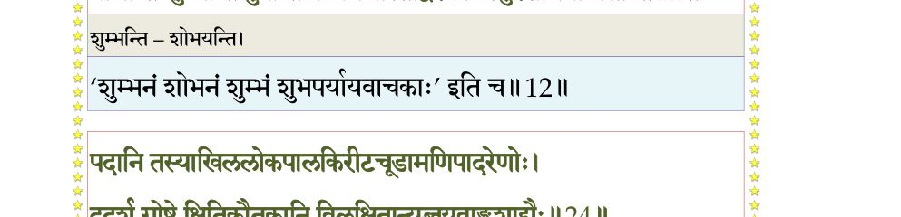
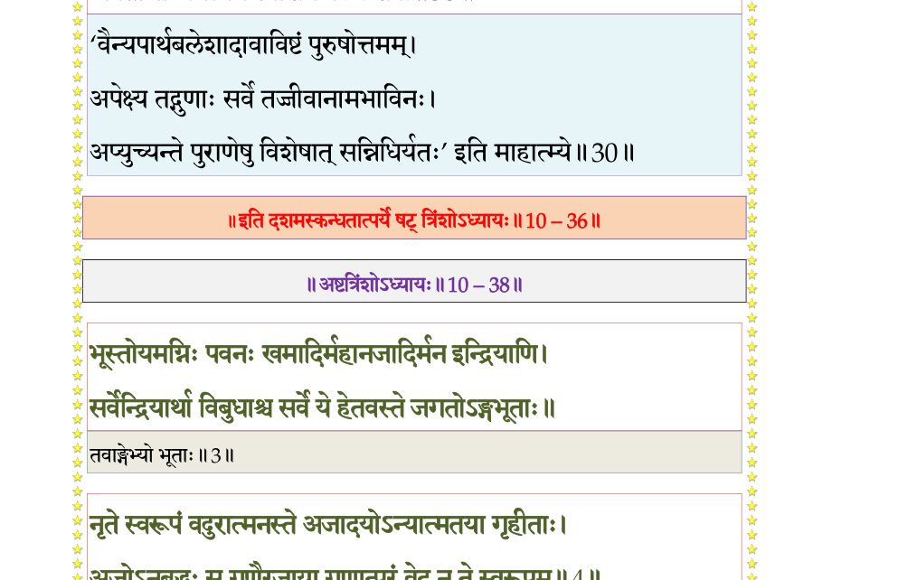

स्कन्ध 10 · अध्याय 36
श्लोक १
श्रीशुक उवाच–
अक्रूरोऽपि च तां रात्रिं मधुपुर्यां महामतिः ।
उषित्वा रथमास्थाय प्रययौ नन्दगोकुलम्।। १ ।।
अक्रूरोऽपि च तां रात्रिं मधुपुर्यां महामतिः ।
उषित्वा रथमास्थाय प्रययौ नन्दगोकुलम्।। १ ।।
श्लोक २
गच्छन् पथि महाभागो भगवत्यम्बुजेक्षणे ।
भक्तिं परामुपगत एवमेतदचिन्तयत्।। २ ।।
भक्तिं परामुपगत एवमेतदचिन्तयत्।। २ ।।
श्लोक ३
अक्रूर उवाच–
किं मयाऽऽचरितं भद्रं किं तप्तं परमं तपः ।
किं वाऽथाप्यर्हते दत्तं यद् द्रक्ष्याम्यद्य केशवम्।। ३ ।।
किं मयाऽऽचरितं भद्रं किं तप्तं परमं तपः ।
किं वाऽथाप्यर्हते दत्तं यद् द्रक्ष्याम्यद्य केशवम्।। ३ ।।
श्लोक ४
ममैतद् दुर्लभं मन्ये उत्तमश्लोकदर्शनम् ।
विषयात्मनो यथा ब्रह्मकीर्तनं शूद्रजन्मनः।। ४ ।।
विषयात्मनो यथा ब्रह्मकीर्तनं शूद्रजन्मनः।। ४ ।।
श्लोक ५
मैवं मामवमंस्यामि स्यादेवाच्युतदर्शनम् ।
ह्रियमाणः कालनद्या क्वचित् तरति कश्चन।। ५ ।।
ह्रियमाणः कालनद्या क्वचित् तरति कश्चन।। ५ ।।
श्लोक ६
ममाद्यामङ्गलं नष्टं फलवांश्चैव मे भवः ।
यन्नमस्ये भगवतो योगिध्येयाङ्घ्रिपङ्कजम्।। ६ ।।
यन्नमस्ये भगवतो योगिध्येयाङ्घ्रिपङ्कजम्।। ६ ।।
श्लोक ७
कंसो बताद्याकृत मेऽत्यनुग्रहं द्रक्ष्येऽङ्घ्रिपद्मं प्रहितोऽमुना हरेः ।
कृतावतारस्य दुरत्ययं तमः पूर्वेऽतरन् यन्नखमण्डलत्विषा।। ७ ।।
कृतावतारस्य दुरत्ययं तमः पूर्वेऽतरन् यन्नखमण्डलत्विषा।। ७ ।।
श्लोक ८
यदर्चितं ब्रह्मभवादिभिः सुरैः श्रिया च देव्या मुनिभिः ससात्विकैः ।
गोचारणायानुचरैश्चरद् वने यद् गोपिकानां कुचकुङ्कुमाङ्कितम्।।८।।
गोचारणायानुचरैश्चरद् वने यद् गोपिकानां कुचकुङ्कुमाङ्कितम्।।८।।
श्लोक ९
द्रक्ष्यामि नूनं सुकपोलनासिकं स्मितावलोकारुणकञ्जलोचनम् ।
मुखं मुकुन्दस्य गुडालकावृतं प्रदक्षिणं मे प्रचरन्ति वै मृगाः।। ९ ।।
मुखं मुकुन्दस्य गुडालकावृतं प्रदक्षिणं मे प्रचरन्ति वै मृगाः।। ९ ।।
श्लोक १४
अप्यद्य विष्णोर्मनुजत्वमीयुषो भारावताराय भुवो निजेच्छया ।
लावण्यधाम्नो भवितोपलम्भनं मह्यं ननु स्यात् फलमद्य सन्दृशः।।
य ईक्षिताऽहंरहितोऽप्यसत्सतोः स्वतेजसाऽपास्ततमोभिदाभ्रमः ।
स्वमाययाऽऽत्मन् रचितेषु तत् सन् प्राणादिभिर्जन्तुषु भाति चित्रधा ।।
यस्याखिलामीवहभिः सुमङ्गलैर्वाचो विमिश्रा गुणकर्मजन्मभिः ।
प्राणन्ति शुम्भन्ति पुनन्ति वै जगद् यास्तद्विरक्ताः स्युरशोभना मताः ।।
स चावतीर्णः किल सात्वतान्वये स्वसेतुपालामरवर्यशर्मकृत् ।
यशो वितन्वन् व्रज आस्त ईश्वरो गायन्ति देवास्तदशेषमङ्गलम्।।
तं त्वद्य नूनं महतां गतिं गुरुं त्रैलोक्यकान्तं दृशिमन्महोत्सवम् ।
रूपं दधानं श्रिय ईप्सितास्पदं द्रक्ष्ये ममासन्नुषसः सुदर्शनाः।।१४।।
लावण्यधाम्नो भवितोपलम्भनं मह्यं ननु स्यात् फलमद्य सन्दृशः।।
य ईक्षिताऽहंरहितोऽप्यसत्सतोः स्वतेजसाऽपास्ततमोभिदाभ्रमः ।
स्वमाययाऽऽत्मन् रचितेषु तत् सन् प्राणादिभिर्जन्तुषु भाति चित्रधा ।।
यस्याखिलामीवहभिः सुमङ्गलैर्वाचो विमिश्रा गुणकर्मजन्मभिः ।
प्राणन्ति शुम्भन्ति पुनन्ति वै जगद् यास्तद्विरक्ताः स्युरशोभना मताः ।।
स चावतीर्णः किल सात्वतान्वये स्वसेतुपालामरवर्यशर्मकृत् ।
यशो वितन्वन् व्रज आस्त ईश्वरो गायन्ति देवास्तदशेषमङ्गलम्।।
तं त्वद्य नूनं महतां गतिं गुरुं त्रैलोक्यकान्तं दृशिमन्महोत्सवम् ।
रूपं दधानं श्रिय ईप्सितास्पदं द्रक्ष्ये ममासन्नुषसः सुदर्शनाः।।१४।।
भागवततात्पर्यनिर्णय

श्लोक १५
अप्यङ्घ्रिमूले पतितस्य मे विभुः शिरस्यधास्यन्निजहस्तपङ्कजम् ।
दत्ताभयं कालभुजङ्गरंहसां प्रोद्वेजितानां शरणैषिणां नृणाम्।। १५ ।।
दत्ताभयं कालभुजङ्गरंहसां प्रोद्वेजितानां शरणैषिणां नृणाम्।। १५ ।।
श्लोक १७
समर्हणं यत्र निधाय कौशिकः तथा बलिश्चाप जगत्त्रयेन्द्रताम् ।
यद् वा विहारे व्रजयोषितां श्रमं स्पर्शेन सौगन्धिकगन्ध्यपानुदत्।।
न मय्युपैत्यप्रियबुद्धिमच्युतः कंसस्य भृत्यः प्रहितोऽपि विश्वदृक् ।
योऽन्तर्बहिश्चेतस एतदीहितं क्षेत्रज्ञ ईक्षत्यमलेन चक्षुषा।। १७ ।।
यद् वा विहारे व्रजयोषितां श्रमं स्पर्शेन सौगन्धिकगन्ध्यपानुदत्।।
न मय्युपैत्यप्रियबुद्धिमच्युतः कंसस्य भृत्यः प्रहितोऽपि विश्वदृक् ।
योऽन्तर्बहिश्चेतस एतदीहितं क्षेत्रज्ञ ईक्षत्यमलेन चक्षुषा।। १७ ।।
श्लोक १८
अप्यङ्घ्रिमूले पतितं कृताञ्जलिं मामीक्षते सस्मितमार्द्रया दृशा ।
सपद्यपध्वस्तसमस्तकिल्बिषो वोढा मुदं वीतविशङ्क ऊर्जिताम्।।१८।।
सपद्यपध्वस्तसमस्तकिल्बिषो वोढा मुदं वीतविशङ्क ऊर्जिताम्।।१८।।
श्लोक २१
सुहृत्तमं ज्ञातिमनन्यदैवतं दोर्भ्यां बृहद्भ्यां परिरभ्यतेऽथ माम् ।
आत्मा हि तीर्थीक्रियते तदैव मे बन्धश्च कामात्मक उच्छ्वसित्यतः ।।
लब्धाङ्गसङ्गं प्रणतं कृताञ्जलिं मां वक्ष्यतेऽक्रूर ततेत्युरुश्रवाः ।
तदा वयं जन्मभृतो महीयसा नैवादृतो यो धिगमुष्य जन्म तत्।।
न तस्य कश्चिद् दयितः सुहृत्तमो न वाऽप्रियो द्वेष्य उपेक्ष्य एव च ।
तथापि भक्तान् भजते यथा यथा सुरद्रुमो यद्वदुपाश्रितार्थदः।। २१ ।।
आत्मा हि तीर्थीक्रियते तदैव मे बन्धश्च कामात्मक उच्छ्वसित्यतः ।।
लब्धाङ्गसङ्गं प्रणतं कृताञ्जलिं मां वक्ष्यतेऽक्रूर ततेत्युरुश्रवाः ।
तदा वयं जन्मभृतो महीयसा नैवादृतो यो धिगमुष्य जन्म तत्।।
न तस्य कश्चिद् दयितः सुहृत्तमो न वाऽप्रियो द्वेष्य उपेक्ष्य एव च ।
तथापि भक्तान् भजते यथा यथा सुरद्रुमो यद्वदुपाश्रितार्थदः।। २१ ।।
श्लोक २२
किञ्चाग्रजो माऽवनतं यदूत्तमः स्मयन् परिष्वज्य गृहीतसञ्चितौ ।
गृहं प्रवेश्याप्तसमस्तसत्कृतं सम्प्रक्ष्यते कंसकृतं स्वबन्धुषु।। २२ ।।
गृहं प्रवेश्याप्तसमस्तसत्कृतं सम्प्रक्ष्यते कंसकृतं स्वबन्धुषु।। २२ ।।
श्लोक २३
श्रीशुक उवाच–
इति सञ्चिन्तयन् कृष्णं श्वफल्कतनयोऽध्वनि ।
रथेन गोकुलं प्राप्तः सूर्यश्चास्तगिरिं नृप।। २३ ।।
इति सञ्चिन्तयन् कृष्णं श्वफल्कतनयोऽध्वनि ।
रथेन गोकुलं प्राप्तः सूर्यश्चास्तगिरिं नृप।। २३ ।।
श्लोक २४
पदानि तस्याखिललोकपालकिरीटचूडामणिपादरेणोः ।
ददर्श गोष्ठे क्षितिकौतुकानि विलिक्षितान्यब्जयवाङ्कुशाद्यैः ।। २४ ।।
ददर्श गोष्ठे क्षितिकौतुकानि विलिक्षितान्यब्जयवाङ्कुशाद्यैः ।। २४ ।।
भागवततात्पर्यनिर्णय
श्लोक २५
तद्दर्शनाह्लादविवृद्धसम्भ्रमः प्रेम्णोत्थरोमाऽश्रुकलाकुलेक्षणः ।
रथादवस्कन्द्य स तेष्वचेष्टत प्रभोरिमान्यङ्घ्रिरजांस्यहो इति ।। २५ ।।
रथादवस्कन्द्य स तेष्वचेष्टत प्रभोरिमान्यङ्घ्रिरजांस्यहो इति ।। २५ ।।
श्लोक २६
ददर्श कृष्णं रामं च व्रजे गोदोहनं गतौ ।
पीतनीलाम्बरधरौ शारदाम्बुरुहेक्षणौ।। २६ ।।
पीतनीलाम्बरधरौ शारदाम्बुरुहेक्षणौ।। २६ ।।
श्लोक २७
किशोरौ श्यामलश्वेतौ श्रीनिकेतौ बृहद्भुजौ ।
सुसुखौ सुन्दरवरौ बालद्विरदविक्रमौ।। २७ ।।
सुसुखौ सुन्दरवरौ बालद्विरदविक्रमौ।। २७ ।।
श्लोक २८
ध्वजवज्राङ्कुशाम्भोजैश्चिह्नितैरङ्घ्रिभिर्व्रजम् ।
शोभमानौ महात्मानौ सानुक्रोशस्मितेक्षणौ।। २८ ।।
शोभमानौ महात्मानौ सानुक्रोशस्मितेक्षणौ।। २८ ।।
श्लोक २९
उदाररुचिरक्रीडौ स्रग्विणौ वनमालिनौ ।
पुण्यगन्धानुलिप्ताङ्गौ स्नातौ विरजवाससौ।। २९ ।।
पुण्यगन्धानुलिप्ताङ्गौ स्नातौ विरजवाससौ।। २९ ।।
श्लोक ३०
प्रधानपुरुषावाद्यौ जगद्धेतू जगत्पती ।
अवतीर्णौ जगत्यर्थे स्वांशेन बलकेशवौ।। ३० ।।
अवतीर्णौ जगत्यर्थे स्वांशेन बलकेशवौ।। ३० ।।
भागवततात्पर्यनिर्णय

श्लोक ३१
दिशो वितिमिरा राजन् कुर्वाणौ प्रभया स्वया ।
यथा मरकतः शैलो रौप्यश्च कनकान्वितौ।। ३१ ।।
यथा मरकतः शैलो रौप्यश्च कनकान्वितौ।। ३१ ।।
श्लोक ३२
रथात् तूर्णमवप्लुत्य सोऽक्रूरः स्नेहविह्वलः ।
पपात चरणोपान्ते दण्डवद् रामकृष्णयोः।। ३२ ।।
पपात चरणोपान्ते दण्डवद् रामकृष्णयोः।। ३२ ।।
श्लोक ३३
भगवद्दर्शनाह्लादबाष्पपर्याकुलेक्षणः ।
पुलकाङ्कित औत्कण्ठ्यात् स्वाख्याने नाशकन्नृप।। ३३ ।।
पुलकाङ्कित औत्कण्ठ्यात् स्वाख्याने नाशकन्नृप।। ३३ ।।
श्लोक ३४
भगवांस्तदभिप्रेत्य रथाङ्गाङ्कितपाणिना ।
परिरेभेऽभ्युपाकृष्य प्रीतः प्रणतवत्सलः।। ३४ ।।
परिरेभेऽभ्युपाकृष्य प्रीतः प्रणतवत्सलः।। ३४ ।।
श्लोक ३५
सङ्कर्षणश्च प्रणतमुपगुह्य महामनाः ।
गृहीत्वा पाणिना पाणिमनयत् सानुजो गृहम्।। ३५ ।।
गृहीत्वा पाणिना पाणिमनयत् सानुजो गृहम्।। ३५ ।।
श्लोक ३६
पृष्ट्वाऽथ स्वागतं तस्मै निवेद्य परमासनम् ।
प्रक्षाल्य विधिवत् पादौ मधुपर्कार्हमाहरत्।। ३६ ।।
प्रक्षाल्य विधिवत् पादौ मधुपर्कार्हमाहरत्।। ३६ ।।
श्लोक ३७
निवेद्य गां चातिथये संवाह्य श्रान्तमादृतः ।
अन्नं बहुगुणं मेध्यं श्रद्धयोपाहरद् विभुः।। ३७ ।।
अन्नं बहुगुणं मेध्यं श्रद्धयोपाहरद् विभुः।। ३७ ।।
श्लोक ३८
तस्मै भुक्तवते प्रीत्या रामः परमधर्मवित् ।
मुखवासैर्गन्धमाल्यैः परां प्रीतिं व्यधात् पुनः।। ३८ ।।
मुखवासैर्गन्धमाल्यैः परां प्रीतिं व्यधात् पुनः।। ३८ ।।
।। इति श्रीमद्भागवते दशमस्कन्धे षट्त्रिंशोऽध्यायः ।।